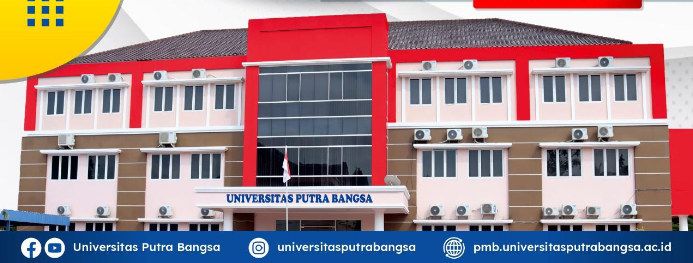

Universitas Putra Bangsa merupakan sebuah perguruan tinggi swasta yang ada di Kabupaten Kebumen, Provinsi Jawa Tengah, Indonesia. Universitas yang awalnya bernama STIE Putra Bangsa, berdiri berdasarkan keputusan Menteri Pendidikan dan Kebudayaan RI nomor 75/D/O/2001 tanggal 05 Juli 2001.
Visi dan Misi Universitas Putra Bangsa Visi :
Menjadi Perguruan Tinggi Unggul Dalam Menghasilkan Sumber Daya Manusia Kompetitif dan Berakhlak Mulia Misi :
1. Menyelenggarakan pendidikan berkualitas yang berkelanjutan untuk menghasilkan sumber daya kompetitif dan berakhlak mulia 2. Melaksanakan dan meningkatkan kualitas serta produktivitas untuk mengembangkan ilmu pengetahuan 3. Melaksanakan dan meningkatkan kualitas serta produktivitas pengabdian pada masyarakat dan tindakan kepedulian sosial. 4. Meningkatkan kompetensi dosen dan tenaga kependidikan yang relevan berdasarkan keilmuan, dan kebutuhan pengembangan Institusi 5. Menjalin dan memperluas jaringan kemitraan dengan berbagai pihak dalam mengembangkan dan mengimplementasikan ilmu pengetahuan.